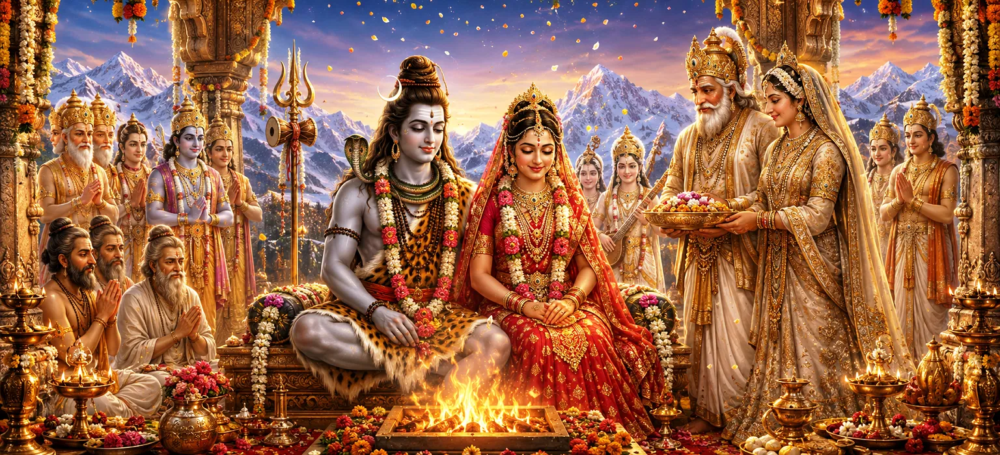

Following their emotional departure from the palace of Himālaya, Lord Shiva and Goddess Pārvatī began their sacred life together. Their marriage united pure consciousness with divine energy and restored harmony throughout the three worlds. As they travelled toward their celestial abode, the gods, sages, gaṇas, and heavenly beings accompanied them with devotion, music, and auspicious prayers.
Lord Shiva travelled with Pārvatī beside Him, surrounded by His faithful gaṇas and the assembled celestial beings. The mountains, forests, rivers, and sacred places along their path appeared to rejoice in the presence of the divine couple.
Fragrant flowers blossomed along the path, gentle winds carried sweet perfumes, and birds sang melodious songs. The sky remained clear and radiant, while celestial flowers descended upon Shiva and Pārvatī as signs of divine approval.
Although Pārvatī remembered her parents with affection, she accepted her new life with happiness and devotion. Her long years of austerity had reached their sacred fulfilment, and she now remained beside the Lord whom she had worshipped with unwavering determination.
Understanding the tender emotions within Pārvatī’s heart, Lord Shiva spoke to her with affection and reassurance. He reminded her that true love is never diminished by physical separation and that her parents would always remain protected by His divine grace.
The gods praised Shiva and Pārvatī as the eternal father and mother of creation. They acknowledged that every form of life, knowledge, strength, and spiritual awakening arose through the inseparable presence of Shiva and Śakti.
Shiva and Pārvatī demonstrate a union founded upon devotion, respect, and spiritual harmony.
Pārvatī accepts the responsibilities of her new life without forgetting the love of her parents.
The union of Shiva and Śakti restores balance and spiritual order throughout creation.
After travelling with the divine couple for some distance, the gods requested permission to return to their celestial abodes. They bowed before Shiva and Pārvatī, expressed gratitude for witnessing the sacred marriage, and prayed for their continued protection.
Marriage becomes sacred when two individuals support one another’s spiritual growth and fulfil their responsibilities with patience, respect, and compassion. The companionship of Shiva and Pārvatī reveals how love can unite strength with wisdom and devotion with purposeful action.
Lord Shiva graciously granted the gods permission to depart and blessed them with strength, wisdom, and protection. He assured them that the divine purpose behind His marriage to Pārvatī would be fulfilled at the proper time.
Reassured by Shiva’s words, the gods offered their final salutations. They returned to their respective celestial regions while continuously praising the names and glory of the divine couple.
With the gods returning to their abodes, Shiva and Pārvatī continued toward the sacred mountain of Kailāsa. Nandī and the devoted gaṇas accompanied them, while celestial music and auspicious chants echoed across the mountains.
Every step of their journey carried divine significance. The arrival of Goddess Pārvatī would transform Kailāsa into the sacred household of Shiva and Śakti, where renunciation and loving companionship would exist in perfect balance.
“Sacred companionship begins when love, wisdom, devotion, and responsibility walk together upon the same path.”
After their sacred marriage and emotional departure from the palace of Himālaya, Lord Shiva and Goddess Pārvatī began their divine life together. As the gods returned to their celestial abodes, the divine couple continued toward Kailāsa, accompanied by Nandī and the faithful gaṇas. Proceed to the next chapter to follow their sacred journey to Shiva’s celestial abode.